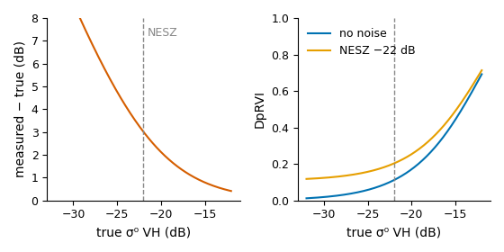

| SAR Concepts: Dual-pol and Compact Polarimetry | |
Most SAR data are not quad-pol. Sentinel-1 records one co-polar and one cross-polar channel, and the RADARSAT Constellation Mission can transmit a circular wave and receive two linear channels. Both give a 2×2 covariance matrix C2, but they carry different information. This page explains what each can and cannot tell you, and why the noise floor matters more than in quad-pol work.
From a dual-pol SLC, the target vector is k = [SVV, SVH]T (or [SHH, SHV]T) and
C2 = < k kH > = [ <|SVV|2> <SVV SVH*> ; <SVH SVV*> <|SVH|2> ]
For reflection-symmetric media (most natural surfaces and vegetation), the co-pol/cross-pol correlation <SVV SVH*> is close to zero. Most of the information is then in the two intensities and their ratio.
The degree of polarisation (Barakat 1977) summarises C2 in one number:
m = √( 1 − 4 det(C2) / (tr C2)2 )
m = 1 for a fully polarised return (one channel, or perfectly correlated channels) and m = 0 for a fully depolarised one. The eigenvalues λ1 ≥ λ2 of C2 also give a dual-pol entropy, H = −Σ pi log2 pi with pi = λi/(λ1 + λ2), and an alpha angle from the eigenvectors. They describe the mix of co- and cross-polar power, not the quad-pol scattering type, so they cannot be read on the quad-pol H–α plane of Polarimetric Decompositions.
| Index | Definition | Meaning |
|---|---|---|
| Cross-ratio CR | C22 / C11 | Rises with vegetation volume |
| RFDI | (C11 − C22) / (C11 + C22) | Low for dense forest, high for cleared or degraded land (defined for HH+HV) |
| DpRVI | 1 − m β, β = λ1/(λ1 + λ2) | 0 for a pure, polarised return (bare soil), towards 1 for dense random vegetation (Mandal et al. 2020) |
| DpRBI, DpRSI | Built from the Stokes parameters of C2 | Built-up areas and bare surfaces |
For comparison, the quad-pol radar vegetation index of Kim and van Zyl (2009) is RVI = 8σHV / (σHH + σVV + 2σHV).
Thermal noise adds a power N, the noise-equivalent sigma zero (NESZ), to each channel. It is uncorrelated between channels and with the signal, so it adds N to C11 and C22 and nothing to C12. The co-polar channel is usually well above N, but the cross-polar channel is often only a few dB above it. The NESZ of Sentinel-1 IW is specified at −22 dB or better and varies across each sub-swath. Noise therefore raises the measured VH backscatter, lowers m and raises DpRVI and CR, most strongly over bare soil, water and other dark surfaces.
bias = 10 log10(1 + N / σ0VH) dB

Figure 1. Effect of a −22 dB noise floor. Left: the measured VH backscatter is 3 dB too high when the true value equals the NESZ. Right: DpRVI for a target with uncorrelated channels and σ0VV = −8 dB, without and with noise. Dark, low-vegetation pixels look more vegetated than they are.
A compact-pol (hybrid-pol) radar transmits one circular polarisation and receives H and V coherently (circular transmit, linear receive; Raney 2007). Because the circular wave excites both H and V at once, the received pair keeps part of the co-polar information that a VV+VH product loses. The Stokes vector of the received wave, for received fields EH and EV, is
g0 = <|EH|2> + <|EV|2>
g1 = <|EH|2> − <|EV|2>
g2 = 2 Re<EH EV*>
g3 = −2 Im<EH EV*> (Raney 2007; Raney et al. 2012)
Sign conventions for g3 differ between authors. SNAP's g3 band has the opposite
sign to the formula above: CP Stokes Parameters writes g3 = +2 Im<EH
EV*> = 2 C12_imag, where EH and EV are the
RCH and RCV channels and C12 = <EH EV*>. With this sign,
g3/(m g0) is Raney's sin 2χ, and for right-circular transmit (RCH) a positive
g3 means odd bounce. For LCH data SNAP reverses the sign internally, using the compact mode in
the metadata. From the Stokes vector:
In SNAP, real compact-pol data come from RCM, whose compact-pol mode transmits right circular and receives H and V. Compact-pol data can also be simulated from quad-pol products.
C2, from a dual-pol or
compact-pol SLC. Bands: C11, C12_real, C12_imag,
C22; for VV+VH, C11 is VV and C22 is VH. GRD products have no
phase and cannot give C2.C22. DP Scattering Powers (Decomposition)
and DP Scattering Powers (Factorization) take an NESZ parameter (default −16 dB).
It does not subtract noise: pixels whose C11 (co-polar) power is below it are treated as noise pixels
and use a simpler formula. Set it to your sensor's NESZ (about −22 dB for Sentinel-1 IW).Dual-Pol-Ratio-Indices): RFDI,
CR, CR_dB, Span; window size default 1. DP Radar Vegetation
Index (Radar-Vegetation-Index): DpRVI. DP Radar Built-up Index
(DpRBI) and DP Radar Surface Index (DpRSI). All take a C2 product.slope in the input, and apply a fixed 15° slope threshold.Entropy, Anisotropy, Alpha) and Model-Based Dual Pol. DP Y3-DP
Decomposition is a separate operator. Polarimetric Unsupervised Classification has Cloude-Pottier
Dual Pol and H Alpha Wishart Dual Pol.i_RCH, q_RCH, i_RCV, q_RCV. CP Stokes
Parameters writes g0..g3 (optional), DegreeOfPolarization,
CPR and other child parameters. CP Decomposition offers m-chi (default), m-delta,
m-alpha, H-alpha, a 2-layer RVoG model and a model-free 3-component method; m-chi writes
MChi_r, MChi_g, MChi_b as amplitudes (square roots of the
powers). CP Simulation creates right- or left-circular data from a quad-pol product.